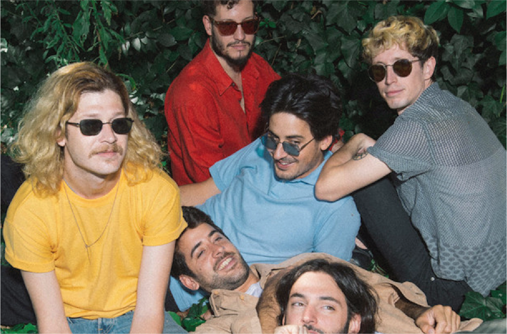

El nombre fue heredado cuando un sonidista dijo "los chicos", pero entendieron "Los chinos" y de ese equívoco surgió Bandalos Chinos.

Bandalos Chinos.
Nosotros somos en :voz y teclados: Goyo Degano, Guitarra y coros: Tomas Verduga, Guitarra: Iñaki Colombo, Bajo: Nicolás "El Lobo" Rodriguez, Bateria: Matias Verduga, Sintetizadores: Salvador Colombo.